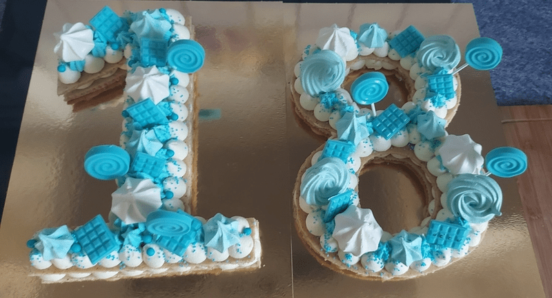
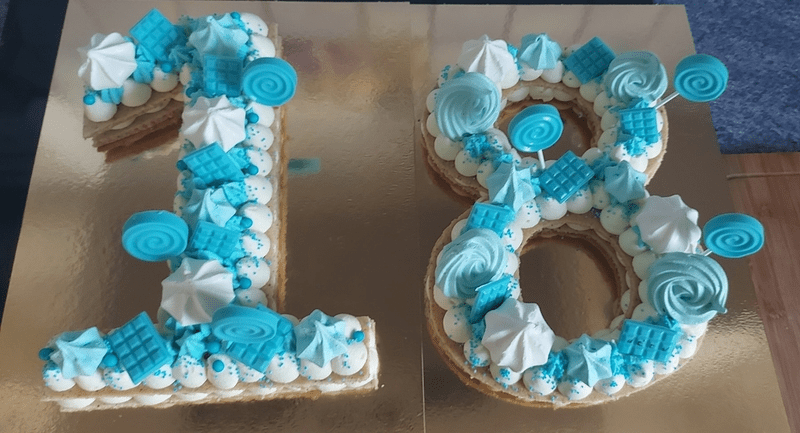

Présentation
Passionnée de cuisine et de pâtisseries depuis longtemps, Sophie en à fait sa profession. Après avoir travaillé dans la restauration de nombreuses années avec des professionnels dans la région de loire-Atlantique, il était temps de voler de ces propres ailes!!! C'est pourquoi aujourd'hui à St Philbert de Grand Lieu La Fabrik des Gourmandises voit le jour. Le salé ainsi que le sucré sont à la fête, et la spécialité de la maison est une pâtisserie nommée le Number Cake.

Savoir-Faire
Avant tout le Savoir-Faire c'est cuisiner pour se faire plaisir ! Lorsque la cuisine est une passion, il est naturel de retranscrire ce plaisir pour les autres. Sophie cuisine et prépare sur place ses plats et pâtisseries avec soin dans son labo La Fabri'K des Gourmandises tout en respectant les produits de saison et locaux car la cuisine est aussi une affaire d'environnement. Venez découvrir cette cuisne traditionnelle et emporter avec vous un plaisir salé ou sucré à consommer sans modération.
Èvénements
Pour tout évènement personnel ou
professionnel, bien manger c'est important !
Du simple repas de famille, pour un moment festif
ou encore les 40 ans de mariages de vos
grands-parents, ou les 5 ans de la petite dernière, il est bon de
fêter cela comme il se doit. Organiser avec Sophie la partie
traiteur de votre évènement ou encore une
 

Spécialités
Les spécialités en termes de pâtisseries sont nombreuses à La Fabri'K des Gourmandises, mais la pâtisserie signature de Sophie est le Number Cake. Plus besoins de bougies avec l'âge dessus les classiques suffisent. Pour le sublimer, il est parsemé de fruits, de fleurs et d’autres éléments décoratifs qui le rendent tout simplement irrésistible. Son petit plus : il s’adapte à tous les âges ! Ce joli gâteau plein de couleurs saura vous séduire. Pour commander et réserver rendez sur Facebook ou encore par téléphone via whatsapp et bien-sûr par email si vous préférez !